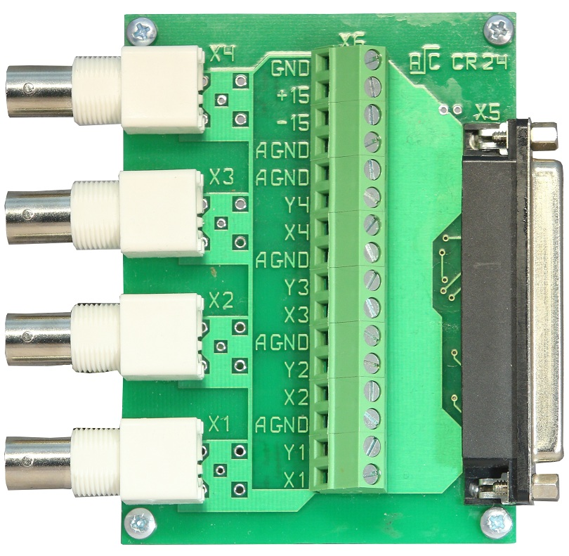

")
Устройства согласования и подключения сигналов
Специализированное, заказное или серийно выпускаемое коммутационное оборудование, обеспечивающее согласованное, надежное и технологичное подключение сигналов внутри приборных шкафов–стоек или внешнего периферийного оборудования и датчиков
Устройства согласования и подключения сигналов – это, выпускаемые серийно или под заказ, универсальные и специализированные устройства или монтажные комплекты, обеспечивающие электрически согласованное, надежное и технологичное подключение различных датчиков и сигналов к многоконтактным, унифицированным разъемам универсальных или специализированных модулей АЦП или модулей ввода или вывода дискретных сигналов.
Конструктивно такие устройства выполняются в виде кроссировочных плат - переходников с клеммных винтовых разъемов на унифицированные многоконтактные разъемы (например, на монтажные разъемы DB-37 для подключения к модулям ввода-вывода LTR). Для удобства подключений такие кроссировочные клеммные платы могут комплектоваться как угловыми разъемами DB37 (рис. 1), так и прямыми разъемами DB37 (рис. 2), а применяемые клеммные разъемы обеспечивают быстрое, надежное и технологичное подключение сигнальных линий необходимого сечения.
Простые устройства для подключения датчиков и сигналов это кроссировочные платы-переходники с многоконтактных разъемов (в данном случае DB27F) на винтовые клеммы. Для такого подключения сигналов к модулям LTR (производства компании “Л Кард”) обычно применяется универсальная кроссировочная клеммная плата Cross-T4. Плата Cross-T4 может устанавливается и крепится непосредственно на внешний разъем подключаемого модуля АЦП. Для такой установки могут применяться коммутационные клеммные платы только с угловым выходным разъемом DB37 (рис. 3).
При установке на плоские, вертикальные или горизонтальные, приборные панели, с креплением на стойки С20 (стойка высотой 20 мм) или на DIN рейку, кроссировочные клеммные платы комплектуются специализированными кабелями для подключения к определенному модулю LTR, например: LTR11, LTR114, LTR27, LTR212, LTR41, LTR42, LTR43 или аналоговому или цифровому разъему модуля Е-502. Здесь следует обратить внимание на то, что для кроссировочных клеммных плат с креплением на DIN рейку выходной разъем DB37 может быть только прямым (рис. 4).
Более сложные кроссировочные клеммные платы дополнительно имеют полигоны для монтажа цепей согласования (рис. 5). В зависимости от типа и схемы подключения элементов цепей согласования такие устройства могут использоваться как:
- Делитель напряжения;
- Токовый вход;
- Проходной соединитель.
Специализированные ккроссировочные клеммные платы дополнительно могут иметь:
- Функциональную маркировку клеммных контактов;
- Дополнительные специализированные разъемы для подключения специальных сигналов и датчиков, например кроссировочная клеммная плата CR_24 дополнительно имеет четыре разъема BNC для подключения датчиков ICP (при совместном использовании этой платы с модулем LTR24-2); Причем, для различных условий применения, кроссировочная плата CR_24 может комплектоваться как прямыми, так и угловыми (рис. 6) BNC разъемами (для платы CR_24 с креплением на DIN рейку могут применяться только прямые разъемы BNC);
- Дополнительные функциональные возможности, специализированные цепи согласования сигналов, индикацию и т. п., например кроссировочные платы для подключения оптоизолированных дискретных сигналов ввода CR_41 и вывода CR_42 (рис. 7) имеют светодиодную индикацию функционального состояния дискретных линий;
- При проектировании и создании автоматизированных систем с применением оборудования управления и сбора данных других производителей, в соответствии с техническими требованиями, разрабатываются и изготавливаются другие специализированные коммутационные устройства, например кроссировочные клеммные платы для подключения сигналов к оборудованию модульных аппаратных платформ производства National Instruments, модульной измерительной системе MGCplus производства Hottinger Baldwin Messtechnik GmbH и т. п.

Применение данного коммутационного оборудование это не только красивый, надежный и высокотехнологичный монтаж приборных и кроссировочных шкафов и стоек для создаваемых автоматизированных систем – это еще и высокие эксплуатационные характеристики, высокая технологичность обслуживания и модернизации в процессе эксплуатации.